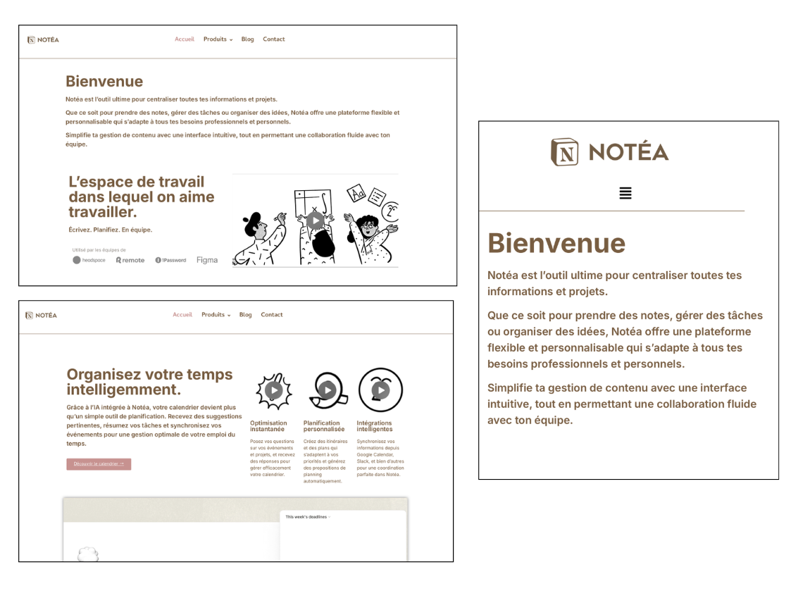

DÉVELOPPER
Site Notéa

Ce projet a été réalisé au semestre 3 dans le cadre d’un travail personnel en développement web, avec pour objectif de reproduire un site de type Notion à l’aide d’un CMS, puis de le réinterpréter sous une identité propre appelée Notéa. L’idée était surtout de comprendre le fonctionnement global de WordPress tout en travaillant sur la personnalisation d’un site existant.
Pour cela, j’ai utilisé WordPress avec Elementor afin de recréer la structure du site et d’y apporter des modifications visuelles, notamment au niveau des couleurs, de la typographie et du logo. J’ai conservé la logique générale de navigation afin de rester proche du modèle initial, tout en adaptant l’ensemble à une nouvelle identité graphique. J’ai également utilisé plusieurs outils du CMS ainsi que des plugins afin d’enrichir le site sans passer par du code.
Avec du recul, ce travail m’a aidée à consolider mes bases sur WordPress, même si certains choix graphiques auraient pu être davantage poussés pour renforcer l’identité du site.
AC 24.01 : Produire des pages et applications Web responsives. AC 24.02 : Mettre en place ou développer un back office.